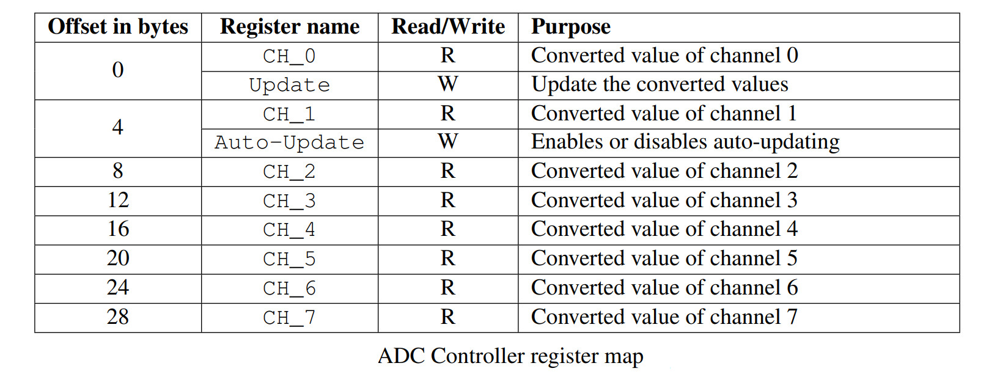
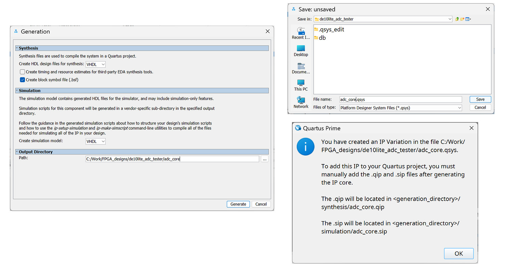
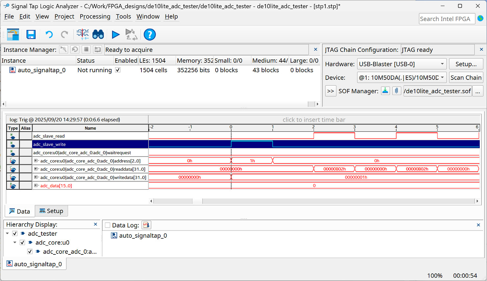

Tutorial: On-Chip ADC IP Core for MAX 10 FPGA#
On-Chip ADC#
The MAX 10 FPGA chip has a built-in 12-bit SAR ADC (Successive Approximation Analog-to-Digital Converter) hard IP core with up to 8 input channels. It can sample analog signals directly without external ADC chips.

Figure: A simplified floorplan of the MAX 10 FPGA
Intel's ADC IP Core provides a convenient interface to access this built-in ADC
functionality on DE-Series FPGA boards such as the DE10-Lite.
On the Terasic MAX 10 FPGA board, the FPGA receives analog input signals at pins
ADC_IN0 ~ ADC_IN5 on the Arduino Shield connector (input voltage range 0V ~ 5V).
Pins ADC_IN6 and ADC_IN7 are not connected.
Because the internal reference voltage (Vref) for the on-chip ADC unit is +2.5V,
the internal analog input range must be between 0V and Vref.
To support the voltage range between 0V and 5V, the input signal voltage
on the FPGA board is reduced by half using a voltage divider circuit.
There is also an Op-Amp circuit working as a voltage buffer on each channel.
Thus, the voltage going into the ADC circuit inside the MAX 10 FPGA chip is
in the range 0V ~ 2.5V.
The ADC circuit works with a clock frequency up to 10 MHz and
can read and convert signals at a speed of up to 1 MSamples/s.
For this purpose, the ALTPLL hard IP core on the MAX 10 FPGA can be used
to generate a 10 MHz clock signal for the ADC circuit
from the 50 MHz clock from the board at pin inclk0.
It generates two output clock signals.
The DE10-Lite board has a 10 MHz clock signal input on the board that can also be used as the ADC Clock. But in this tutorial, ALTPLL is used to show how to generate a clock signal inside the FPGA chip from the external 50 MHz input signal.
Avalon-MM Interface for the ADC IP Core#
In this tutorial, we will use the on-chip ADC IP Core (or ADC Controller for DE-series Boards) with an Avalon Memory-Mapped (Avalon-MM) interface for communication between the FPGA logic and the on-chip ADC hardware. Through this interface, users can easily read converted data from multiple analog input channels and configure the ADC's operating mode.
The ADC core provides up to eight readable addresses for as many as eight analog inputs.
Each address holds the 12-bit digital output from its respective ADC channel.
The ADC core has two writable addresses to control its operation:
- Manual-Update Mode: Conversions are triggered by user logic manually.
- Auto-Update Mode: Conversions run continuously, automatically updating channel data.
Writing a '1' to the Auto-Update register will enable auto-updating, while writing a ‘0’ will disable it. When auto-update is enabled, the system will automatically begin another update operation after the previous one finishes. In Auto-Update mode, the 16th bit of the channel register acts as a refresh flag. After all channels are refreshed, the flags are high. Upon reading a channel, that channel’s flag is set to low automatically.
If reads to the channel registers are attempted during an update operation, the stored values from the previous update operation will be read without waiting for the latest update to finish. This is in contrast to
a read during an update operation triggered by the Update register, where the wait_request signal would be asserted until the current update operation finishes.

Figure: Bus waveforms for Avalon-MM read and write operations

Figure: Registers of the ADC Controller
The next section explains the setup and operation of the ADC IP Core, including how to instantiate the IP in the user design, configure its control registers, and read analog values from the input channels.
ADC IP Core Generation#
Steps to create the ADC IP Core (ADC Controller):
- Create a new project using the New Project Wizard in Quartus Prime.
- Open Platform Designer.
- Add the ADC IP Core, available under "University Program > Generic IO > ADC Controller for DE-Series Boards".
- Configure the ADC IP Core (select the DE10-Lite board, set the ADC Clock Frequency to 10 MHz, and specify the Number of Channels as 6).
- Connect the clock and reset signals between the components in System Contents.
- Rename and export the Avalon Memory-Mapped Slave to
adc_slave. - Click the "Generate HDL" button to generate the IP core and its HDL code (choose VHDL output).
- Save the IP core configuration as a
.qsysfile and includes this type in the project. - Instantiate the ADC IP Core in the top-level design.

Figure: Adding the ADC Controller in the System Contents tab of Platform Designer

Figure: Configuring the ADC Controller

Figure: Connecting the components and exporting selected signals

Figure: Generating HDL output files and saving IP configuration in a .qsys file
VHDL Code for ADC Core Testing#
The following VHDL code demonstrates how to use the ADC IP core generated in the previous section with Platform Designer.
LIBRARY ieee;
USE ieee.std_logic_1164.ALL;
USE ieee.numeric_std.ALL;
ENTITY adc_tester IS
PORT (
CLK : IN STD_LOGIC;
RESET_N : IN STD_LOGIC;
LEDS : OUT STD_LOGIC_VECTOR(9 DOWNTO 0)
);
END ENTITY;
ARCHITECTURE rtl OF adc_tester IS
-------------------------------------------------------------------
-- Component Declaration for ADC core
-------------------------------------------------------------------
COMPONENT adc_core IS
PORT (
clk_clk : IN STD_LOGIC;
reset_reset_n : IN STD_LOGIC;
adc_slave_write : IN STD_LOGIC;
adc_slave_readdata : OUT STD_LOGIC_VECTOR(31 DOWNTO 0);
adc_slave_writedata : IN STD_LOGIC_VECTOR(31 DOWNTO 0);
adc_slave_address : IN STD_LOGIC_VECTOR(2 DOWNTO 0);
adc_slave_waitrequest : OUT STD_LOGIC;
adc_slave_read : IN STD_LOGIC
);
END COMPONENT;
-------------------------------------------------------------------
-- Signals for ADC interface
-------------------------------------------------------------------
SIGNAL adc_slave_write : STD_LOGIC := '0';
SIGNAL adc_slave_read : STD_LOGIC := '0';
SIGNAL adc_slave_address : STD_LOGIC_VECTOR( 2 DOWNTO 0) := (OTHERS => '0');
SIGNAL adc_slave_writedata : STD_LOGIC_VECTOR(31 DOWNTO 0) := (OTHERS => '0');
SIGNAL adc_slave_readdata : STD_LOGIC_VECTOR(31 DOWNTO 0);
SIGNAL adc_slave_waitrequest : STD_LOGIC;
TYPE state_type IS (ST_INIT, ST_ENA_AUTO_UPDATE,
ST_IDLE, ST_READ, ST_SAVE_DATA);
SIGNAL state : state_type := ST_INIT;
SIGNAL adc_data : STD_LOGIC_VECTOR(15 DOWNTO 0) := (OTHERS => '0');
BEGIN
-------------------------------------------------------------------
-- Instantiate the ADC core
-------------------------------------------------------------------
u0 : adc_core
PORT MAP(
clk_clk => CLK,
reset_reset_n => RESET_N,
adc_slave_write => adc_slave_write,
adc_slave_readdata => adc_slave_readdata,
adc_slave_writedata => adc_slave_writedata,
adc_slave_address => adc_slave_address,
adc_slave_waitrequest => adc_slave_waitrequest,
adc_slave_read => adc_slave_read
);
-------------------------------------------------------------------
-- ADC initialization process
-- Enable Auto-Update on reset
-------------------------------------------------------------------
PROCESS (CLK, RESET_N)
BEGIN
IF RESET_N = '0' THEN
adc_slave_write <= '0';
adc_slave_read <= '0';
adc_slave_address <= (OTHERS => '0');
adc_slave_writedata <= (OTHERS => '0');
adc_data <= (OTHERS => '0');
state <= ST_INIT;
ELSIF rising_edge(CLK) THEN
CASE state IS
WHEN ST_INIT =>
state <= ST_ENA_AUTO_UPDATE;
WHEN ST_ENA_AUTO_UPDATE =>
IF adc_slave_waitrequest = '0' THEN
adc_slave_address <= "001"; -- Auto-Update register (W)
adc_slave_writedata(0) <= '1'; -- Enable auto-update
adc_slave_write <= '1';
state <= ST_IDLE;
END IF;
WHEN ST_IDLE =>
adc_slave_write <= '0';
adc_slave_read <= '0';
adc_slave_address <= "000"; -- select the ADC channel 0
state <= ST_READ;
WHEN ST_READ =>
IF adc_slave_waitrequest = '0' THEN
adc_slave_read <= '1';
state <= ST_SAVE_DATA;
END IF;
WHEN ST_SAVE_DATA =>
IF adc_slave_readdata(15) = '1' THEN -- Check update flag
adc_data <= adc_slave_readdata(15 downto 0);
END IF;
adc_slave_read <= '0';
state <= ST_READ;
WHEN OTHERS =>
state <= ST_INIT;
END CASE;
END IF;
END PROCESS;
PROCESS (CLK)
BEGIN
IF rising_edge(CLK) THEN
LEDS <= adc_data(11 DOWNTO 2);
END IF;
END PROCESS;
END ARCHITECTURE;
It is highly recommended to use the Signal Tap Logic Analyzer to analyze the operation of the FPGA design, as it increases both visibility and debuggability.

Figure: Using the Signal Tap Logic Analyzer to analyze the internal signals of the FPGA design.
This work is licensed under a Creative Commons Attribution-ShareAlike 4.0 International License.
Created: 2025-09-23 | Last Updated: 2025-09-23